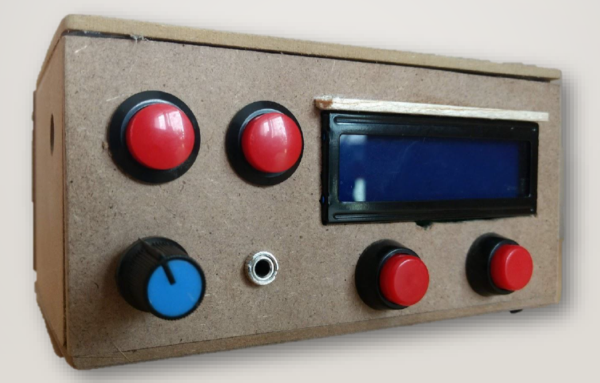

PETITS PROJECTES
Una llista de petits projectes que he fet públics.
Aquesta pàgina web
Vaig comprar aquest domini a mitjans del 2020, per a fer una pàgina web simple (però xula), però no va ser fins per les festes de Nadal del mateix any que em vaig posar a dissenyar-la i programar-la. Com que tampoc volia estar-m'hi gaire temps, vaig fer servir Bootstrap Studio (gràcies al programa d'estudiants de GitHub el tenia gratuït) amb algunes extensions i algun codi fet a mà per a aconseguir aquest disseny de la pàgina web.
El "back-end" (la part interna del servidor) és bastant senzill en aquest cas, ja que aquesta pàgina web és quasi estàtica. En el moment de redactar això, la pàgina es troba en un servidor de Firebase (una eina de Google) amb una oferta gratüita. Aquesta oferta no em deixa processar cap tipus de dades, per això no us ha aparegut el missatge d'acceptar les galetes!
No tinc pensat fer cap canvi en aquesta pàgina web, ja que està fent la seva funció correctament. Així que a part de penjar algun projecte nou, no espereu cap canvi.
Composicions musicals
A mesura que el meu nivell de música augmentava, vaig començar a escriure cançons. L'objectiu era de tocar-les en directe en un concert de composicions de l'escola de música. Tinc les gravacions de totes les cançons, però no tinc el permís de penjar-les aquí, ja que hi apareixen altres persones en els vídeos.
El que sí que us puc ensenyar, és l'audio de les actuacions, o l'exportació dels fitxers MIDI de les partitures. També hi trobareu les patritures en format PDF.
Òbviament, l'experiència en directe no té punt de comparació amb els àudios que hi ha a continuació, però almenys així us podeu fer una idea de les meves composicions.
Low Flight - Feb.2020 - Partitura
Looking at the grass - Feb.2019- Partitura
La segona versió (Live) - Feb.2018 - Partitura
The Skyline (Live) - Feb. 2017 - Partitura
Darrere de cada cançó, hi ha una llarga història i hores de treball. Segurament podreu observar com el meu nivell augmenta a mesura que passen els anys (aquest era l'objectiu dels concerts de composicions). I pel que fa als drets d'autor, podeu utilitzar els àudios sempre i quan aparegui en els crèdits del vostre projecte ;).
Ràdio FM en Arduino

Vaig fer aqeust projecte per l'institut, l'any 2018. Es tracta d'una Radio FM programada amb una placa Arduino. Fent servir el mòdul TEA5767, una pantalla LCD, un amplificador, alguns botons per a canviar la freqüència i silenciar l'aparell, dos altaveus, un connector d'auriculars i una mica de programació, he aconseguit demostrar les meves habilitats en electrònica i programació a classe.
He experimentat algunes dificultats en el moment de construir la carcassa de la maqueta, ja que la meva intenció era de fer-la amb una impressora 3D, però la que em va proporcionar l'escola no funcionava gaire bé amb dissenys prims, com els de la carcassa. Per això la vaig haver d'acabar fent a corre-cuita de fusta, com es veu en les imatges.
Podeu anar a llegir la memòria del projecte, juntament amb el codi font d'Arduino i altres fitxers, com els dissenys 3D, a la web tiny.cc/TDREricRoy.